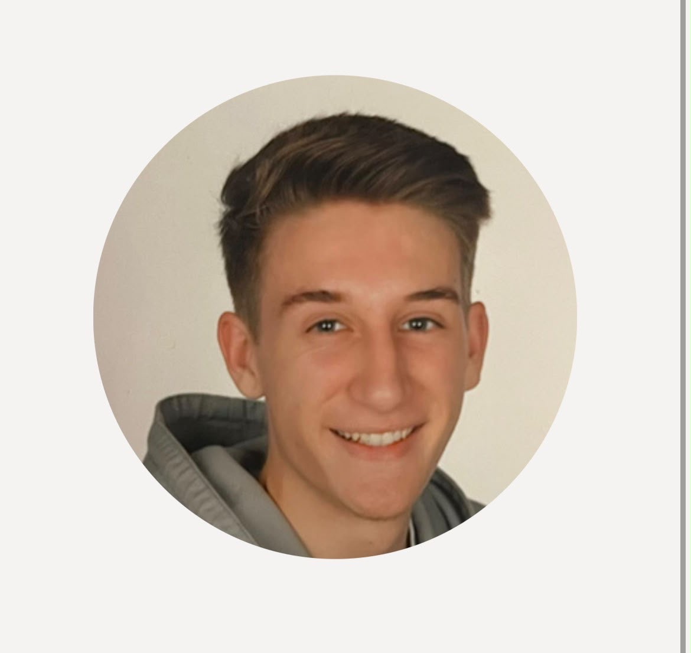

Die Menschen hinter Erlebnis Egerland
Georg
Feile
17 Jahre · im Projektjahr 2026
Meine Aufgaben
- Zeitzeugengespräche
- Filmproduktion
- Fotografie
- Tontechnik
Meine Motivation
Warum ich dabei bin
Mich hat an unserem Projektseminar Geografie von Anfang an besonders die Möglichkeit begeistert, die Geschichte nicht nur inhaltlich aufzuarbeiten, sondern sie auch filmisch festzuhalten. Vor allem die Bereiche Film, Fotografie und Ton haben mich interessiert. Ich wollte verstehen, wie aus einzelnen Aufnahmen eine zusammenhängende Geschichte entsteht, welche Wirkung bestimmte Kameraeinstellungen und Perspektiven haben und wie man durch Bild und Ton eine Atmosphäre schafft, die das Erzählte für den Zuschauer greifbar macht. Für mich war deshalb nicht nur das Ergebnis entscheidend, sondern vor allem auch der Weg dorthin und die praktische Umsetzung.
Gleichzeitig liegt mir natürlich auch die historische Seite unseres Projekts am Herzen. Besonders spannend finde ich die Begegnungen mit den Menschen, die einen persönlichen Bezug zu dieser Geschichte haben. Mit ihnen ins Gespräch zu kommen, ihre Erinnerungen kennenzulernen und dabei möglicherweise Einblicke zu erhalten, die sonst kaum zugänglich wären, macht das Projekt für mich besonders wertvoll. Es ist eine ganz andere Art, Geschichte zu erleben, wenn man sie aus erster Hand erzählt bekommt.
Vor allem durch die enge Zusammenarbeit mit Elias Kronseder konnte ich im Laufe des Projekts viele neue Fähigkeiten im Bereich Filmproduktion, Fotografie und Tontechnik entwickeln. Dabei habe ich nicht nur den Umgang mit der Technik gelernt, sondern auch ein besseres Verständnis dafür gewonnen, wie aufwendig solche Projekte sind, wie die einzelnen Arbeitsschritte ineinandergreifen und was es braucht, um aus einer Idee ein fertiges Filmprojekt entstehen zu lassen.
Besonders gefällt mir, dass ich in diesem Seminar meine technischen Interessen mit der Auseinandersetzung mit Geschichte und Menschen verbinden kann. Zu sehen, wie aus vielen einzelnen Aufnahmen, Gesprächen und Ideen etwas Gemeinsames entsteht, ist für mich ein großer Teil dessen, was dieses Projekt ausmacht.